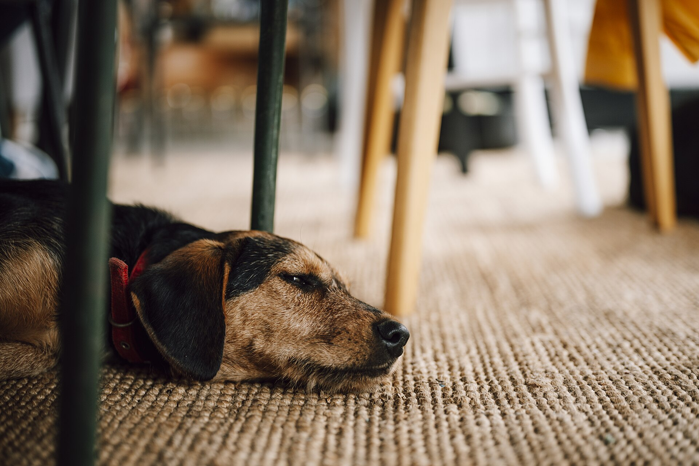
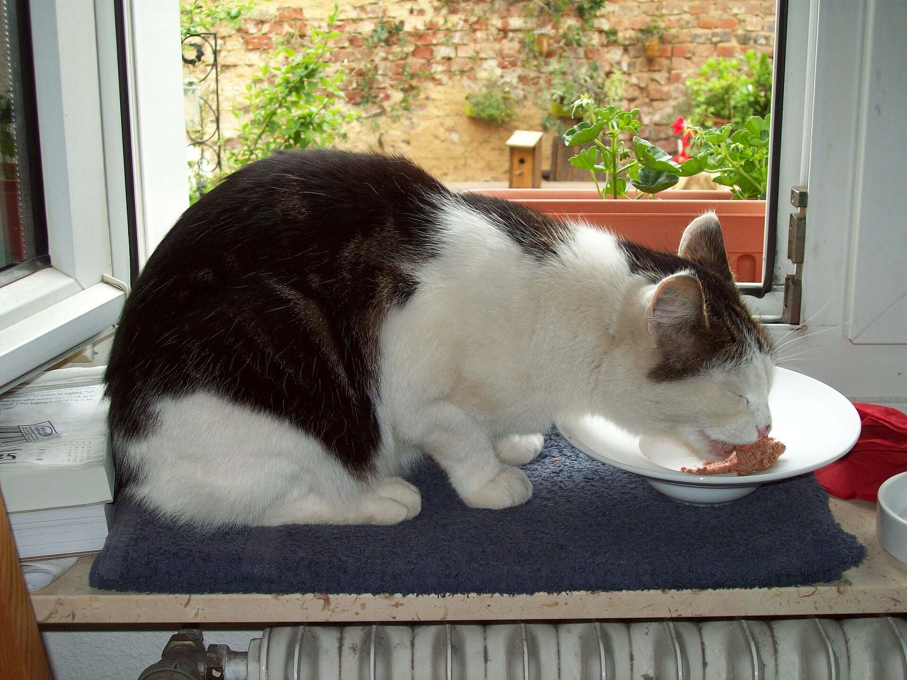
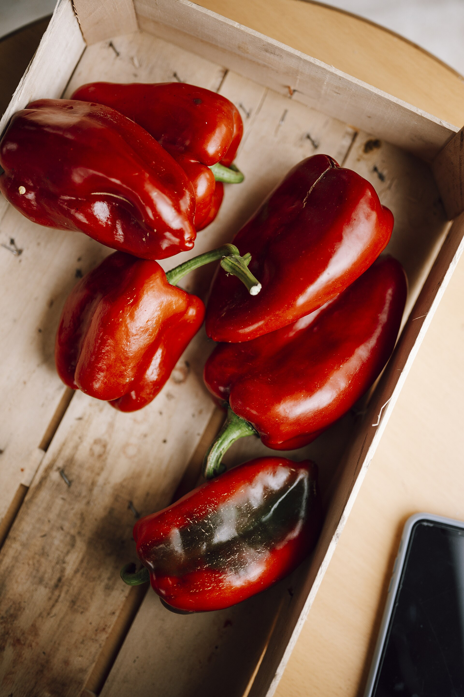
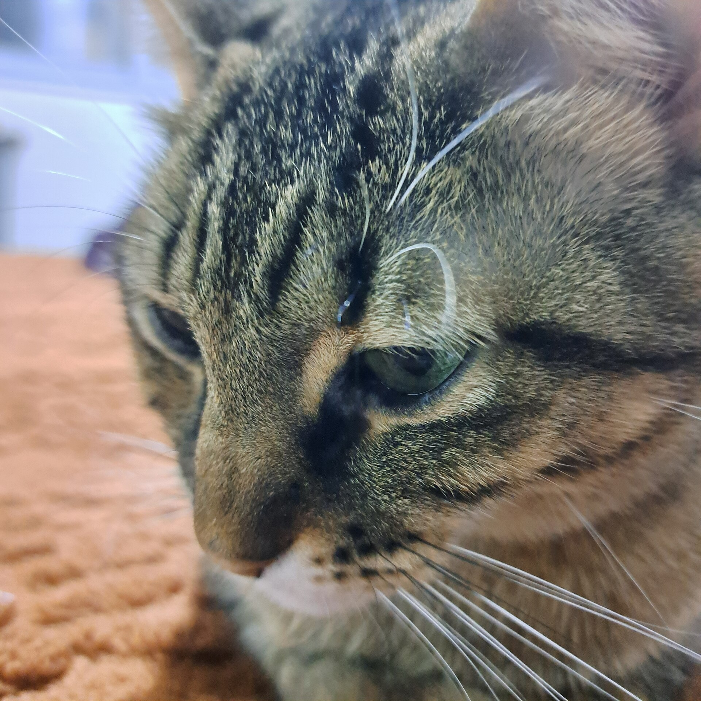
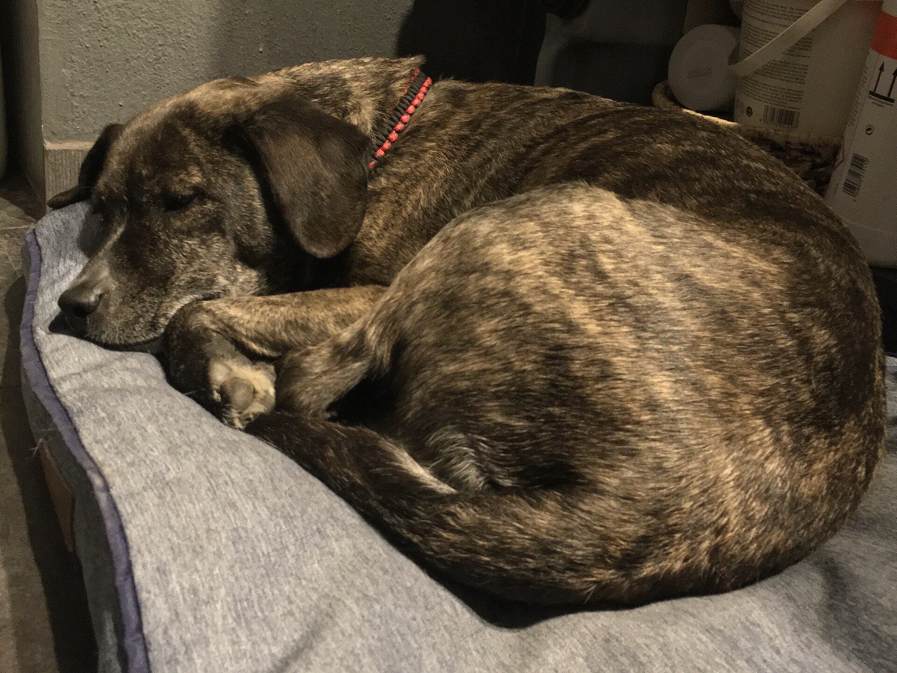

Skin and ears
Diet review and elimination trials for itching, paw licking and ear infections that keep coming back.
Residency-trained in clinical nutrition, NC State
Michael Chae, DVM, MS, reviews your pet's records and current food, then writes a balanced home-cooked recipe or a commercial diet plan, in English or Korean.

Diet review and elimination trials for itching, paw licking and ear infections that keep coming back.

Diets for chronic diarrhea, vomiting, IBD and food sensitivities, with fiber chosen for your pet.

Calorie targets that protect muscle, and diets that fit kidney, liver or joint care.
Four steps, from a short request to the written plan in your inbox. Nothing is paid until the case is reviewed.

Two to three minutes for one pet, with no payment. Dr. Chae checks the request fits before the next step.

You fill in the full nutrition history while your vet sends the referral and labs from the last 6 months.

After review you get the total. Once it is paid, you choose a video appointment.

Recipes in grams, supplements by the teaspoon, cooking and storage steps, and a treat allowance.
Each fee covers the video consult, a written plan by email and one follow-up within 30 days.
You pay once your request and records are reviewed and the estimate is sent, before the appointment is scheduled. Fees are non-refundable once paid. After one year a new consultation is billed at the full fee.

Clinical nutrition support for your patient, and the patient stays in your care.
Residency-trained veterinary nutritionist, North Carolina State University, 2021 to 2024.
As a primary care veterinarian at Banfield Pet Hospital from 2018 to 2020, Dr. Chae saw how often a case turned on what the pet ate. His residency covered nutritional assessment, commercial diet selection and balanced home-cooked formulation.
He works with owners and their veterinary teams, consults in English and Korean, and lives in Los Angeles with his wife and their cats Bong, Byul and Bee.

A short request for one pet, about 2 to 3 minutes. No payment is taken and no appointment is booked at this step.
Yes. Your veterinarian stays responsible for diagnosis and treatment; the diet plan supports that care.
After Dr. Chae reviews your request and records and sends the estimate. Payment comes before the appointment is scheduled.